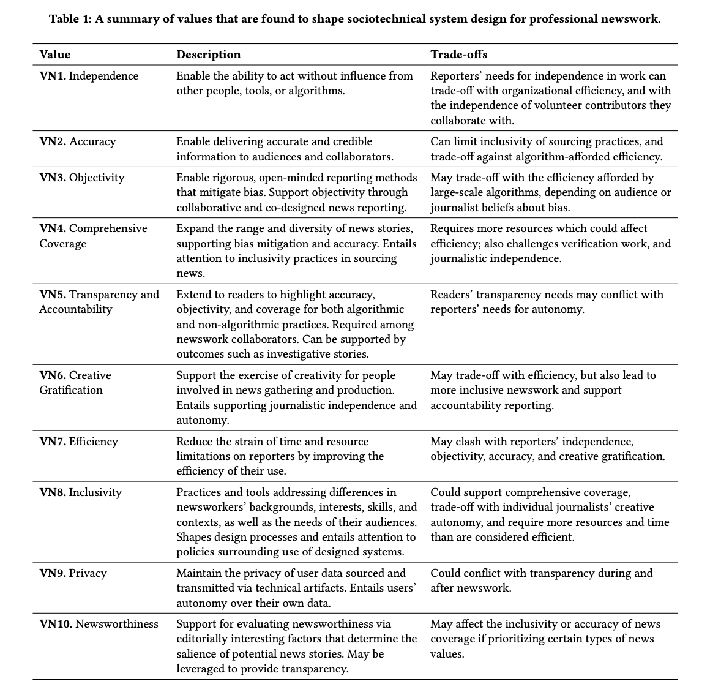

Short TLDR about this paper // Link to full paper
Designing technology is never neutral. Our tools both shape and are shaped by our values. Take Facebook’s original News Feed: it deliberately prioritized recency above all else, surfacing the freshest posts but sidelining other journalistic values. By contrast, print newspapers had to juggle breaking news, political significance, novelty, and controversy within fixed front‐page space. This goal of this example is to show that every design choice foregrounds certain values and downplays others. The goal of our paper is to map out these relationships between technology design and human values, particularly in the domain of journalism.
Through this mapmaking process, we can (1) suggest actionable ideas for designers facing different value trade-offs, (2) evaluate designed sociotechnical systems through the lens of the values they embody (or not). Systematically examining these manifestations and trade-offs of values—what gets amplified, what gets hidden, whose interests those decisions represent—can also help the field of HCI more broadly assess whether our contributions advance journalism and its goal to act in the public interest.
To this end, i.e., to synthesize the different ways that values emerge, interact, and conflict, we conducted a systematic literature review at the intersection of journalism and HCI. We sifted through and analyzed 95 papers, from ACM/IEEE venues to communication studies outlets like Digital Journalism and Journalism Studies. If you’re curious about the nuts and bolts of our search, the value categories we surfaced, and the trade-offs we observed in how designers actually embed values into their work, check out the full paper and see the figure below for a little teaser. In this post, I’ll zoom out a bit to distill the five key lessons from our research for our HCI, journalism, and design communities. Some of these are stated pretty directly in the paper; others have emerged from my reflections on the work and discussions with peers about it.

Design projects—interfaces and systems, as well as policies and guidelines that guide their use—grapple with human values in three main ways: as problems to solve, principles to guide design decisions, and competing tensions that trade-off against on another. Our lit review surface concrete manifestations of values in these roles. We analyzed the past decade-ish of journalism and HCI literature to map out how values actually manifest in these roles, like how designers build AI tools that center journalists’ autonomy, or how news transparency gets built into interfaces for audiences. Our synthesis reveals the value trade-offs designers have made in practice, which stakeholder interests get represented through these values, and crucially, what (or rather who) gets left out. The result is a design space that can guide future value-sensitive design projects aimed at supporting journalism’s core mission: disseminating important information in the public interest.